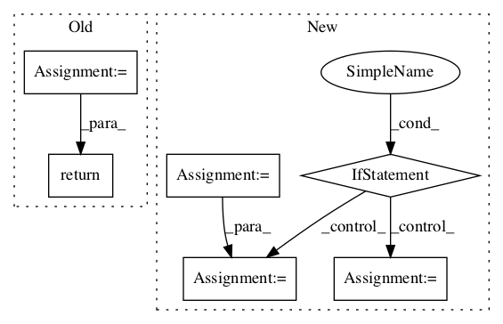

cec704bd54458bb5b86ca7db4061a5c597fac85e,python/tf_cnn_benchmarks/variable_mgr.py,VariableMgrIndependent,get_gradients_to_apply,#VariableMgrIndependent#Any#Any#,224

Before Change
device_grads = gradient_state
// Note that each grad_and_vars looks like the following:
// ((grad0_gpu0, var0_gpu0), ... , (grad0_gpuN, var0_gpuN))
return [grad_and_vars[device_num] for grad_and_vars in zip(*device_grads)]
def get_devices(self):
return self.benchmark_cnn.raw_devices
After Change
def get_gradients_to_apply(self, device_num, gradient_state):
device_grads = gradient_state
tower_grad = device_grads[device_num]
if self.benchmark_cnn.enable_auto_loss_scale and device_num == 0:
// Since we don"t aggregate variables in --independent mode, we cannot tell
// if there are NaNs on all GPUs. So we arbitrarily choose to only check
// NaNs on the first GPU.
has_inf_nan_list = []
for grad, _ in tower_grad:
has_inf_nan_list.append(tf.reduce_all(tf.is_finite(grad)))
self.grad_has_inf_nan = tf.logical_not(tf.reduce_all(has_inf_nan_list))
return tower_grad
def get_devices(self):
return self.benchmark_cnn.raw_devices
In pattern: SUPERPATTERN
Frequency: 3
Non-data size: 6
Instances
Project Name: HewlettPackard/dlcookbook-dlbs
Commit Name: cec704bd54458bb5b86ca7db4061a5c597fac85e
Time:
Author: null
File Name: python/tf_cnn_benchmarks/variable_mgr.py
Class Name: VariableMgrIndependent
Method Name: get_gradients_to_apply
Project Name: tensorflow/models
Commit Name: d90f5580d932b801ea3a9715d0dee00fc58ab55a
Time:
Author: null
File Name: research/deep_speech/deep_speech_model.py
Class Name:
Method Name: _rnn_layer
Project Name: openai/baselines
Commit Name: b71152eea0470ac2629c33e0fc66a54fe494949f
Time:
Author: null
File Name: baselines/common/vec_env/dummy_vec_env.py
Class Name: DummyVecEnv
Method Name: step_wait